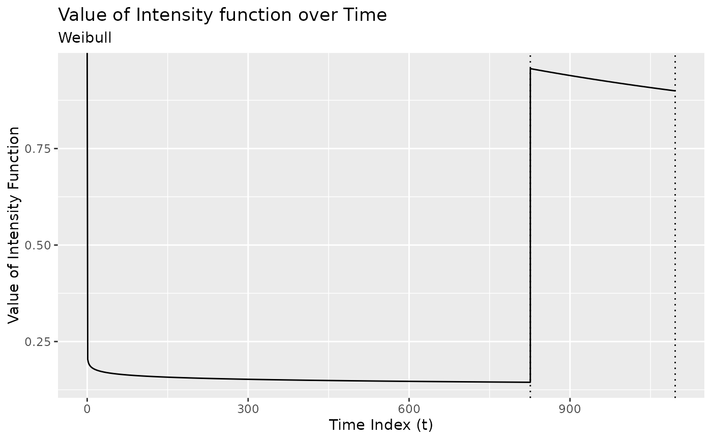

Fit a non-homogeneous Poisson process model to the exceedances of a time series.
fit_nhpp.RdAny times series can be modeled as a non-homogeneous Poisson process of the
locations of the exceedances of the mean of the series. This function
uses the BMDL() criteria to determine the best fit parameters for each
region defined by the changepoint set returned by changepoints().
Usage
fit_nhpp_region(exc, tau_left, tau_right, params = parameters_weibull(), ...)
fit_nhpp(x, tau, ...)
# S3 method for class 'nhpp'
logLik(object, ...)
# S3 method for class 'nhpp'
glance(x, ...)
mcdf(x, dist = "weibull")
plot_intensity(x, ...)Arguments
- exc
Output from
exceedances()- tau_left
left-most changepoint
- tau_right
right-most changepoint
- params
Output from
parameters_weibull()- ...
arguments passed to
stats::optim()- x
An
nhppobject- tau
A vector of changepoints.
- object
An
nhppobject- dist
Name of the distribution
Value
A tbl_df with each row representing one region.
a numeric vector of length equal to the exceedances of x
See also
Other model-fitting:
fit_lmshift(),
fit_meanshift(),
fit_meanvar(),
new_fun_cpt()
Examples
fit_nhpp_region(exceedances(DataCPSim), 0, 575)
#> $par
#> [1] 10.0000 311.8929
#>
#> $value
#> [1] -545.8334
#>
#> $counts
#> function gradient
#> 43 43
#>
#> $convergence
#> [1] 0
#>
#> $message
#> [1] "CONVERGENCE: REL_REDUCTION_OF_F <= FACTR*EPSMCH"
#>
#> $logLik
#> [1] 1488.061
#>
fit_nhpp(DataCPSim, tau = 826)
#> List of 6
#> $ data : Time-Series [1:1096] from 1 to 1096: 35.5 29 35.6 33 29.5 ...
#> $ tau : num 826
#> $ region_params: tibble [2 × 5] (S3: tbl_df/tbl/data.frame)
#> ..$ region : chr [1:2] "[0,826)" "[826,1.1e+03]"
#> ..$ param_alpha: num [1:2] 0.949 0.78
#> ..$ param_beta : num [1:2] 5.055 0.116
#> ..$ logPost : num [1:2] -353 -271
#> ..$ logLik : num [1:2] -337 -270
#> $ model_params : Named num 63.2
#> ..- attr(*, "names")= chr "threshold"
#> $ fitted_values: Named num [1:1096] 43.2 43.2 43.2 43.2 43.2 ...
#> ..- attr(*, "names")= chr [1:1096] "[0,826)" "[0,826)" "[0,826)" "[0,826)" ...
#> $ model_name : chr "nhpp"
#> - attr(*, "class")= chr [1:2] "nhpp" "mod_cpt"
fit_nhpp(DataCPSim, tau = 826, threshold = 20)
#> List of 6
#> $ data : Time-Series [1:1096] from 1 to 1096: 35.5 29 35.6 33 29.5 ...
#> $ tau : num 826
#> $ region_params: tibble [2 × 5] (S3: tbl_df/tbl/data.frame)
#> ..$ region : chr [1:2] "[0,826)" "[826,1.1e+03]"
#> ..$ param_alpha: num [1:2] 0.983 0.764
#> ..$ param_beta : num [1:2] 0.9202 0.0841
#> ..$ logPost : num [1:2] -830 -272
#> ..$ logLik : num [1:2] -826 -270
#> $ model_params : Named num 20
#> ..- attr(*, "names")= chr "threshold"
#> $ fitted_values: Named num [1:1096] 43.2 43.2 43.2 43.2 43.2 ...
#> ..- attr(*, "names")= chr [1:1096] "[0,826)" "[0,826)" "[0,826)" "[0,826)" ...
#> $ model_name : chr "nhpp"
#> - attr(*, "class")= chr [1:2] "nhpp" "mod_cpt"
fit_nhpp(DataCPSim, tau = 826, threshold = 200)
#> List of 6
#> $ data : Time-Series [1:1096] from 1 to 1096: 35.5 29 35.6 33 29.5 ...
#> $ tau : num 826
#> $ region_params: tibble [2 × 5] (S3: tbl_df/tbl/data.frame)
#> ..$ region : chr [1:2] "[0,826)" "[826,1.1e+03]"
#> ..$ param_alpha: num [1:2] 0.0605 0.5417
#> ..$ param_beta : num [1:2] 0.101 0.106
#> ..$ logPost : num [1:2] -5.35 -77.25
#> ..$ logLik : num [1:2] -1.72 -75.33
#> $ model_params : Named num 200
#> ..- attr(*, "names")= chr "threshold"
#> $ fitted_values: Named num [1:1096] 43.2 43.2 43.2 43.2 43.2 ...
#> ..- attr(*, "names")= chr [1:1096] "[0,826)" "[0,826)" "[0,826)" "[0,826)" ...
#> $ model_name : chr "nhpp"
#> - attr(*, "class")= chr [1:2] "nhpp" "mod_cpt"
fit_nhpp(DataCPSim, tau = changepoints(segment(DataCPSim, method = "pelt")))
#> List of 6
#> $ data : Time-Series [1:1096] from 1 to 1096: 35.5 29 35.6 33 29.5 ...
#> $ tau : int [1:3] 547 822 972
#> $ region_params: tibble [4 × 5] (S3: tbl_df/tbl/data.frame)
#> ..$ region : chr [1:4] "[0,547)" "[547,822)" "[822,972)" "[972,1.1e+03]"
#> ..$ param_alpha: num [1:4] 0.362 0.657 0.738 0.758
#> ..$ param_beta : num [1:4] 0.3922 0.0883 0.073 0.0749
#> ..$ logPost : num [1:4] -60.1 -197.9 -150.2 -125.8
#> ..$ logLik : num [1:4] -57.4 -196.1 -148.4 -124
#> $ model_params : Named num 63.2
#> ..- attr(*, "names")= chr "threshold"
#> $ fitted_values: Named num [1:1096] 35.3 35.3 35.3 35.3 35.3 ...
#> ..- attr(*, "names")= chr [1:1096] "[0,547)" "[0,547)" "[0,547)" "[0,547)" ...
#> $ model_name : chr "nhpp"
#> - attr(*, "class")= chr [1:2] "nhpp" "mod_cpt"
nhpp <- fit_nhpp(DataCPSim, tau = 826)
mcdf(nhpp)
#> [1] 3.686770 8.959924 10.453459 36.009425 36.781826 37.861718
#> [7] 43.696179 49.336684 56.301163 65.465988 76.343633 85.221032
#> [13] 85.958484 86.400791 86.548199 87.137697 87.285038 87.874266
#> [19] 88.610501 89.199250 90.081980 90.376119 91.258226 91.405198
#> [25] 92.286767 92.580522 93.461485 93.608268 94.195277 94.782087
#> [31] 94.928759 95.075419 95.515324 95.661935 95.955120 96.248256
#> [37] 96.980886 97.127376 97.713217 97.859647 99.030665 99.469603
#> [43] 99.615892 99.762170 100.054690 100.785790 100.931975 101.078149
#> [49] 101.224311 101.516602 102.101046 102.539261 102.831347 103.269393
#> [55] 103.415386 104.145184 104.291110 104.582929 104.728822 105.603950
#> [61] 105.749767 106.624437 107.061626 107.207335 108.081360 108.226993
#> [67] 108.372616 108.663831 109.100573 109.391681 109.828266 109.973773
#> [73] 110.264757 110.701154 111.137458 111.428275 111.573669 111.719052
#> [79] 112.300483 113.027042 113.462856 114.189011 114.479403 114.624585
#> [85] 115.205210 115.495463 116.365985 116.656081 116.946138 117.381150
#> [91] 117.816074 118.250912 118.685663 119.120328 119.699748 119.844579
#> [97] 120.568594 120.713368 120.858133 121.147635 121.726527 122.449933
#> [103] 123.317714 123.462312 123.896052 124.474243 125.196777 125.341257
#> [109] 125.485728 125.630189 125.774642 127.688330 129.601003 130.556960
#> [115] 131.512664 132.468117 133.423317 135.332965 136.287412 137.241609
#> [121] 138.195557 139.149254 140.102703 141.055902 142.008853 142.961556
#> [127] 143.914012 144.866219 146.769894 147.721362 148.672583 149.623559
#> [133] 150.574290 151.524776 152.475017 154.374767 155.324276 156.273542
#> [139] 157.222566 158.171347 159.119885 160.068182 161.016238 161.964052
#> [145] 162.911626 163.858959 164.806051 165.752905 167.645893 168.592029
#> [151] 169.537926 172.374190 173.319137 174.263847 175.208321 176.152559
#> [157] 177.096560 178.040326 178.983858 179.927154 180.870216 181.813043
#> [163] 182.755637 183.697997 184.640124 185.582018 186.523680 187.465109
#> [169] 188.406306 189.347272 190.288007 191.228510 192.168783 193.108825
#> [175] 194.048638 194.988220 195.927574 196.866698 198.744260 199.682699
#> [181] 200.620910 202.496649 203.434178 205.308556 206.245406 207.182030
#> [187] 209.054603 209.990552 210.926276 212.797052 213.732105 214.666934
#> [193] 215.601540 217.470085 218.404023 220.271235 222.137563 223.070395
#> [199] 224.003007 224.935398 225.867570 226.799523 227.731256 228.662770
#> [205] 229.594066 230.525143 231.456002 232.386643 233.317066 234.247272
#> [211] 236.107034 237.036590 237.965930 238.895054 239.823963 240.752656
#> [217] 241.681134 242.609398 243.537447 245.392902 246.320309 247.247503
#> [223] 249.101251 250.954149 251.880280 252.806199 253.731906 254.657403
#> [229] 255.582688 257.432627 258.357281 259.281725 260.205960 261.129985
#> [235] 262.053801 262.977408 263.900807 264.823997 265.746979 266.669754
#> [241] 267.592321 268.514680 269.436833 270.358779 271.280518 272.202051
#> [247] 273.123378 274.044500 274.965416 275.886126 276.806632 277.726933
#> [253] 278.647029 279.566922 280.486610 281.406095 282.325376 283.244454
#> [259] 284.163328 285.082001 286.000470 286.918738 287.836804 288.754667
#> [265] 289.672330 290.589791 291.507051 292.424110 293.340969 294.257628
#> [271] 295.174086 296.090345 297.006404 297.922264 298.837925 299.753387
#> [277] 300.668651 301.583716 302.498583 303.413253 304.327724 305.241999
#> [283] 306.156076 307.069956 307.983639 308.897127 309.810417 310.723512
#> [289] 311.636412 312.549115 313.461624 314.373937 315.286056 316.197980
#> [295] 317.109709 318.021245 318.932586 319.843734 320.754689 321.665450
#> [301] 322.576019 323.486394 324.396577 325.306568 326.216367 327.125974
#> [307] 328.035389 328.944613 329.853645 330.762487 331.671138 332.579599
#> [313] 333.487869 334.395949 335.303839 336.211540 337.119051 338.026373
#> [319] 338.933506 339.840451 340.747207 341.653774 342.560154 343.466345
#> [325] 344.372349 345.278166 346.183795 347.089237 347.994492 348.899561
#> [331] 349.804444 350.709140 351.613650 352.517975 353.422114 354.326068
#> [337] 355.229837 356.133420 357.036819 357.940034 358.843064 359.745911
#> [343] 360.648573 361.551052 362.453347 363.355460 364.257389 365.159135
#> [349] 366.060699 366.962080 367.863279 368.764296 369.665132 370.565786
#> [355] 371.466258 372.366549 373.266659 374.166589 375.066338 375.965906
nhpp <- fit_nhpp(DataCPSim, tau = 826, threshold = 200)
mcdf(nhpp)
#> [1] 12.04806 13.61487 14.31512 14.78032 15.55279 15.62984 15.93769 16.24498
#> [9] 17.08715 18.15300 18.22888 18.68344 18.83469 19.43837 19.88975 20.11500
#> [17] 20.56462 20.71423 21.01308 22.27750 22.42565
plot_intensity(fit_nhpp(DataCPSim, tau = 826))

mod <- segment(bogota_pm, method = "pelt")
plot_intensity(fit_nhpp(bogota_pm, tau = changepoints(mod)))